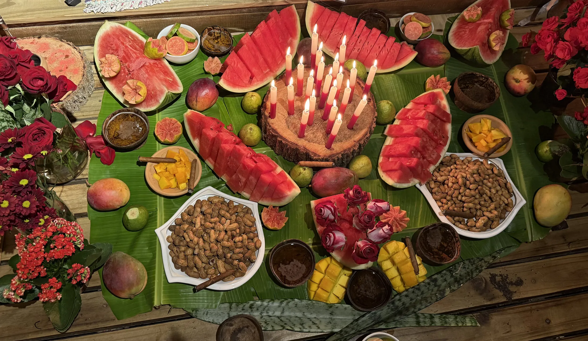

InícioFundamentos
Orixás e Linhas
As forças da natureza que regem nossa coroa e as falanges de espíritos que trabalham na caridade.
O que é um Orixá?
O Orixá é uma fração de Deus, uma força pura da natureza ligada ao nosso Ori, a cabeça e a essência de cada um. Para Pierre Verger, é o axé dos elementos primordiais. Para Luiz Antonio Simas, é “o mundo se encantando nos corpos”.
E as linhas de guias?
Se os Orixás são as forças puras, os guias (Caboclos, Pretos Velhos, Erês, Baianos, Exus) são os espíritos trabalhadores que incorporam nos médiuns e conversam conosco, ajudando a curar o que levamos por dentro.
As fotos são dos amalás montados pela própria casa. Para saber como se monta um amalá, veja Rituais e Preceitos.
Os 9 Orixás cultuados na CUCA.
Como na árvore da Cabala, tudo nasce de uma única fonte. No alto está Olorum, a energia una de Deus. Dele descem as forças que regem nossa coroa, ligadas umas às outras por fios de luz. Nenhum Orixá trabalha sozinho.
Passe o cursor ou toque num Orixá para ver seus fios. Clique para abrir a ficha.
Força Feminina · Sabedoria Ancestral
Nanã
Ancestralidade
Saluba Nanã!
Decantação, paciência, perdão de dores antigas e maturidade
- Atuação
- É a energia da decantação, da paciência e da sabedoria. Ajuda a desacelerar a vida, fechar ciclos dolorosos e acalmar ambientes endurecidos.
- Arquétipo
- A avó divina, a mais velha e sábia. Senhora da lama primordial (encontro da terra com a água). Representa o respeito ao tempo.
- No emocional
- Cura o excesso de ansiedade e o apego ao passado. Traz o perdão de velhas dores e a paz de compreender que tudo tem sua hora certa.
Fios de luz na árvore
Coroa · Princípio Criador
Oxalá
Fé
Epa Babá!
Paz profunda, fé, silêncio interior e reconciliação
- Atuação
- A paz profunda, a fé e a pureza. É a energia que apazigua grandes brigas, acalma corações irados e traz luz divina máxima para onde há caos e escuridão.
- Arquétipo
- O princípio da criação. Associado à sabedoria extrema, à calma e à figura crística (Jesus) no sincretismo. Representa o amor incondicional e o respeito absoluto por todas as criaturas.
- No emocional
- Traz esperança, tolerância e compaixão. Ajuda a vencer o ódio e o rancor, ensinando que o silêncio, a humildade e o perdão são muito mais fortes do que qualquer vingança.
Fios de luz na árvore
Força Masculina · Sabedoria das Matas
Oxóssi
Conhecimento
Okê Arô!
Conhecimento, foco certeiro, cura botânica e fartura
- Atuação
- É a energia que limpa, nutre e cura através da força das matas. Promove o conhecimento, a fartura e a saúde espiritual.
- Arquétipo
- O caçador certeiro. Aquele que detém o conhecimento das florestas e usa apenas uma flecha para atingir seu objetivo.
- No emocional
- Trabalha o foco, a concentração e a intuição. Ajuda a silenciar a ansiedade, estimula os estudos e direciona a pessoa a atingir suas metas com precisão.
Fios de luz na árvore
Força Feminina · Grande Mãe dos Oceanos
Iemanjá
Geração
Odoiá!
Acolhimento materno, limpeza emocional das mágoas e paz no lar
- Atuação
- É o amparo universal e a limpeza profunda. Como o mar, lava as mágoas, reconforta o espírito cansado e traz estabilidade para lares em conflito.
- Arquétipo
- A grande mãe do universo, senhora dos oceanos. Aquela que acolhe as tristezas e lágrimas do mundo em suas águas, devolvendo calmaria.
- No emocional
- Trata feridas profundas ligadas à família, rejeição e abandono. Traz um alívio profundo que acalma a mente ansiosa.
Fios de luz na árvore
Força Feminina · Águas Doces e Amor
Oxum
Amor
Ora iê iê ô!
Afeto, união familiar, amor-próprio, diplomacia e prosperidade
- Atuação
- É a energia da harmonia, do amor e da união. Restaura laços familiares, protege as gestações e atrai prosperidade e caminhos abertos.
- Arquétipo
- A senhora das cachoeiras e dos rios de água doce. Representa o afeto materno, a beleza, a diplomacia e a fluidez da vida.
- No emocional
- Cura carências afetivas e ensina o amor-próprio. Como o rio que contorna a pedra, Oxum ensina flexibilidade e inteligência emocional.
Fios de luz na árvore
Força Masculina · Orixá Regente da CUCA
Ogum
Lei e caminhos
Ogunhê!
Abertura de caminhos, proteção, ordem e coragem de agir
- Atuação
- Abertura de caminhos e proteção. É a força que "corta" a negatividade, organiza a vida e traz ordem onde há confusão. É o Orixá regente do nosso terreiro.
- Arquétipo
- O guerreiro e o ferreiro. Aquele que forja suas próprias ferramentas para o trabalho e para a defesa. A energia da ação reta.
- No emocional
- Traz coragem, atitude e foco. Cura a procrastinação e o medo de agir, ajudando a pessoa a sair da inércia e tomar as rédeas da própria vida.
Fios de luz na árvore
Força Masculina · Lei e Equilíbrio
Xangô
Justiça
Kaô Kabecilê!
Justiça divina, equilíbrio racional, maturidade e retidão
- Atuação
- É a força da justiça, da lei e do equilíbrio. Corta injustiças, protege contra mentiras e "pesa" nossas atitudes na balança da vida.
- Arquétipo
- O rei sábio, o juiz, o senhor do fogo e das pedreiras. Representa uma base sólida que não se abala facilmente pelas dificuldades.
- No emocional
- Traz maturidade e razão. Ajuda a pessoa a sair da posição de vítima e assumir a responsabilidade pelos próprios atos com firmeza de caráter.
Fios de luz na árvore
Força Feminina · Ventos e Movimento
Iansã
Movimento
Eparrei!
Mudança rápida, coragem para encerrar ciclos e ânimo vital
- Atuação
- Movimentação e mudança. É a energia que "varre" as energias estagnadas, corta amarras tóxicas e afasta más influências com grande rapidez.
- Arquétipo
- A guerreira valente, senhora dos ventos e das tempestades, dona de uma força indomável que encaminha os espíritos desorientados.
- No emocional
- Destrói a paralisia, a apatia e o desespero. Traz ânimo, força para recomeçar e coragem para encerrar ciclos que não fazem bem.
Fios de luz na árvore
Força Masculina · Cura e Transmutação
Omulu
Cura e passagem
Atotô!
Cura profunda do físico e da alma, humildade e renascimento
- Atuação
- É a força suprema da cura e da transformação. Atua fortemente na restauração da saúde física e espiritual, encerrando momentos de sofrimento agudo.
- Arquétipo
- O curador que esconde suas marcas sob as palhas. O senhor da terra que conhece a dor da doença e tem o poder de transformá-la em renascimento.
- No emocional
- Ajuda a lidar com o luto, dores crônicas e o medo das perdas. Ensina a humildade e desperta uma imensa força de superação.
Fios de luz na árvore
As linhas de trabalho.
Se os Orixás são as forças, as linhas são as falanges de espíritos que descem para trabalhar. Da esquerda à direita, cada uma tem seu jeito. A esquerda é tratada com o mesmo respeito: Exus, Pombagiras e Exus Mirins são os guardiões da casa.
Passe o cursor sobre uma linha para ver o seu gesto. Clique para abrir a ficha.
As linhas de trabalhoFalanges de espíritos que trabalham na caridade
Esquerda
Neutras
Direita
Linha de Esquerda · Guardiões da Lei e Vitalidade
Exus e Pombagiras
Guardiões da Esquerda
Defesa da tronqueira, quebra de demandas, autoestima e verdade sem máscaras
- Atuação
- Executores da Lei e guardiões da vitalidade. Desmancham magias negativas, rompem demandas, abrem caminhos terrenos e protegem o terreiro.
- Arquétipo
- Espíritos francos e libertos da hipocrisia humana que atuam nas encruzilhadas e na escuridão para defender a luz e a verdade.
- No emocional
- Curam a baixa autoestima, a apatia depressiva e as ilusões afetivas, ensinando limites claros e amor-próprio.
Guias chefes da casa nesta linha
Na mesma corrente: Esquerda
Linha de Esquerda · Guardiões Mirins
Exus Mirins
Desmanche de demandas, rapidez e verdade dita sem rodeios
- Atuação
- Trabalham junto aos Exus e Pombagiras no desmanche de demandas e na limpeza de energias pesadas. São rápidos e diretos: cortam o que está preso e trazem à luz o que está escondido.
- Arquétipo
- A criança da esquerda: esperta, irreverente e brincalhona, mas firme na Lei. Lembra que a seriedade do trabalho espiritual também convive com a alegria.
- No emocional
- Desfaz máscaras e hipocrisias. Ajuda a pessoa a encarar com leveza e coragem aquilo que vinha escondendo de si mesma.
- Amalá
- Velas vermelhas e pretas. Bebida: refrigerante, ou cachaça mediante autorização da casa. Cigarros, também mediante autorização.
Na mesma corrente: Esquerda
Linhas Neutras · Jogo de Cintura e Fé
Baianos
E Zé Pelintra
Superação de dificuldades materiais, resiliência alegre e abertura de portas
- Atuação
- Quebradores de magias e removedores de obstáculos densos. Excelentes orientadores para as lutas de sobrevivência material e situações enroladas.
- Arquétipo
- A sagacidade e a resistência do povo brasileiro que enfrenta as agruras do destino sem perder a fé, a dignidade e o sorriso.
- No emocional
- Ensinam o verdadeiro "jogo de cintura", ajudando o consulente a sair da vitimização e encarar a vida com coragem prática.
- Amalá
- Comida: petiscos de bar como amendoim, aipim frito e azeitonas, sem nenhuma proteína animal. Bebida: cachaça ou cerveja clara. Flores: rosas vermelhas e brancas. Velas: brancas.
Na mesma corrente: Neutras
Linhas Neutras · Povo d'Água
Marinheiros
Limpeza de angústias, equilíbrio emocional nas tormentas e desapego
- Atuação
- Associados a Iemanjá e aos domínios do mar, lavam angústias, ilusões e desespero, estabilizando tonturas energéticas da alma.
- Arquétipo
- O navegador que balança ao ritmo das ondas bravias, mas nunca cai e jamais perde o leme da vida.
- No emocional
- Trabalham nossa capacidade de soltar o que não podemos controlar, permitindo que a emoção flua e lave o coração.
- Amalá
- Comida: frutas aquosas e claras, como uvas e peras. Bebida: cachaça, rum ou água. Flores: rosas brancas ou flores azuis. Velas: azuis, brancas ou misturadas.
Guias chefes da casa nesta linha
Na mesma corrente: Neutras
Linhas Neutras · Força do Sertão
Boiadeiros
Foco, firmeza de propósito, proteção do lar e recolhimento de obsessores
- Atuação
- Especialistas em laçar, conter e encaminhar espíritos sofredores e desorganizados, trabalhando sob a disciplina cabocla.
- Arquétipo
- O homem do sertão, de trato direto e firme como o chão batido, que traz no laço sua ferramenta de ordem espiritual.
- No emocional
- Reúne as energias do consulente que estavam dispersas por confusão mental, devolvendo foco e vontade férrea de caminhar.
- Amalá
- Comida: doces e salgados da roça, como broa de milho, curau e pamonha. Bebida: cachaça ou café. Flores: cravos ou flores simples do campo. Velas: amarelas e pretas.
Guias chefes da casa nesta linha
Na mesma corrente: Neutras
Linhas Neutras · Povo do Oriente
Ciganos
Intuição, liberdade criativa, prosperidade e cura pelas essências
- Atuação
- Trabalham as linhas da intuição, da abertura de caminhos comerciais e afetivos e da cura vibratória por cristais, fogo e perfumes.
- Arquétipo
- O povo livre que celebra a existência, guardião dos saberes nômades, da alegria e da leitura espiritual dos caminhos.
- No emocional
- Libertam do medo da mudança, estimulam o senso de merecimento e despertam a alegria de viver.
Guias chefes da casa nesta linha
Na mesma corrente: Neutras
Linhas Neutras · Medicina Astral
Médicos
Orientais / Cura
Reestruturação celular fluídica, alinhamento de chakras e paz mental
- Atuação
- Atuam na remoção sutil de miasmas incrustados no perispírito, desobstrução de meridianos energéticos e passes cirúrgicos espirituais.
- Arquétipo
- Médicos e sábios orientais/ocidentais que aliaram a ciência curativa à manipulação fluídica do plano espiritual.
- No emocional
- Induzem profunda paz, centramento, relaxamento do corpo astral e silenciamento do ruído mental crônico.
- Amalá
- Água mineral pura, flores brancas ou violetas, incensos de sândalo ou lótus e velas brancas.
Na mesma corrente: Neutras
Linhas Neutras · Fraternidade Cristã
Simiromba
Monges / Franciscanos
Desapego da vaidade, oração silenciosa e elevação coletiva
- Atuação
- Trabalham em altíssima oitava vibracional ligada à Caridade Universal, à prece silenciosa e à elevação moral do grupo.
- Arquétipo
- Monges franciscanos e velhos frades que simbolizam a simplicidade última da fé e o serviço despido de vaidade.
- No emocional
- Desarmam o materialismo e o orgulho, convidando à fraternidade sincera e à serenidade interior.
- Amalá
- Pão repartido, quartzo branco, água pura, incenso de olíbano e velas brancas simples.
Na mesma corrente: Neutras
Linha da Direita · Doutrina e Cura
Caboclos
Passes magnéticos potentes, cura pelas folhas e retidão moral
- Atuação
- Grandes doutrinadores e curadores da Umbanda. Trabalham com intensa aplicação de passes magnéticos, quebrando feitiçarias e limpando o corpo espiritual com o vigor das folhas.
- Arquétipo
- Representam os povos originários do Brasil: o guerreiro e guardião da floresta, imbuído de coragem, comunhão com a mata e palavra reta.
- No emocional
- Cura a estagnação. Insufla no consulente assertividade, foco, coragem de buscar o próprio sustento e reconexão com a natureza.
- Amalá
- Comida: frutas silvestres da estação, ou conforme a linha. Bebida: cerveja preta, cerveja branca, água ou suco natural de frutas. Velas: conforme o Orixá da linha.
Guias chefes da casa nesta linha
Na mesma corrente: Direita
Linha da Direita · Sabedoria e Humildade
Pretos Velhos
Benzedura, escuta acolhedora, consolo familiar e paciência
- Atuação
- Senhores da benzedura e do aconselhamento. Desatam nós familiares, absorvem mágoas profundas e realizam limpezas densas de forma pacífica e contínua.
- Arquétipo
- A ancestralidade que venceu a dor pela resiliência do espírito e pelo amor incondicional dos avós. Representam a misericórdia.
- No emocional
- Grandes terapeutas da alma: reduzem a ansiedade, ensinam a paciência, ajudam a elaborar traumas antigos e dissolvem o orgulho pela humildade.
Guias chefes da casa nesta linha
Na mesma corrente: Direita
Linha da Direita · Pureza e Renovação
Erês
E Curumins
Limpeza veloz pela alegria, leveza e reconexão com a criança interior
- Atuação
- Promovem uma assepsia energética extremamente veloz, purificando ambientes densos com vibrações de alta frequência, alegria e verdade.
- Arquétipo
- O espírito encantado e a alma infantil pura; seres da natureza que manifestam a bondade sem máscaras.
- No emocional
- Desarmam a seriedade excessiva, a melancolia e o desespero adulto, devolvendo otimismo, leveza e esperança.
Guias chefes da casa nesta linha
Na mesma corrente: Direita
Te esperamos na segunda.
Gira aberta toda segunda-feira, às 19h30. Senhas a partir das 19h.